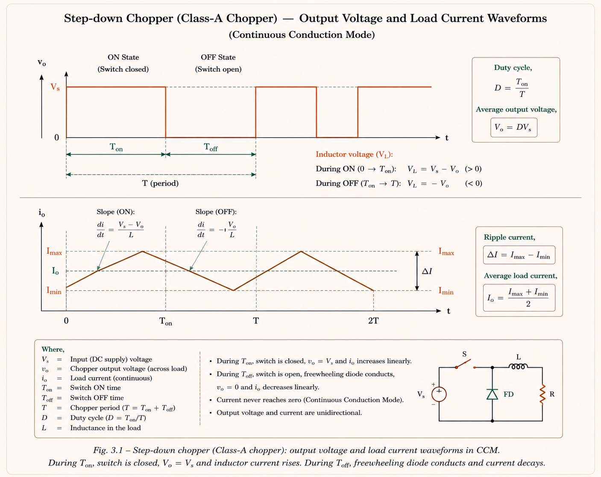
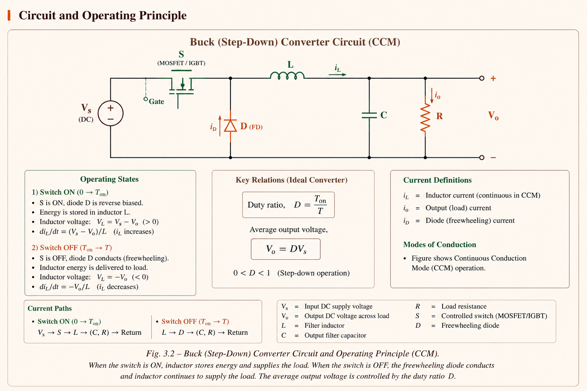
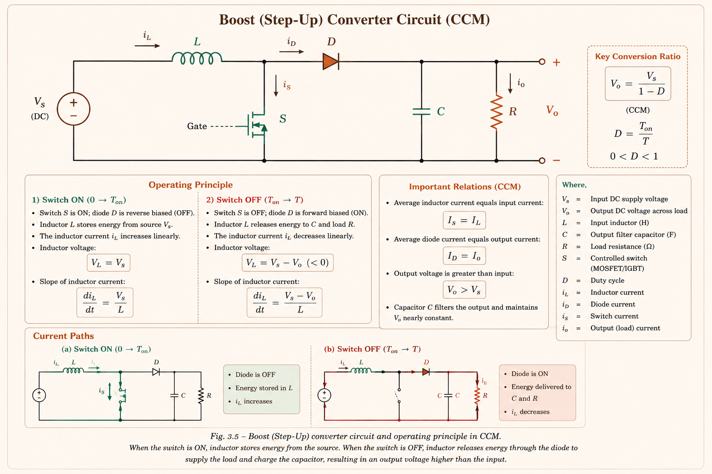
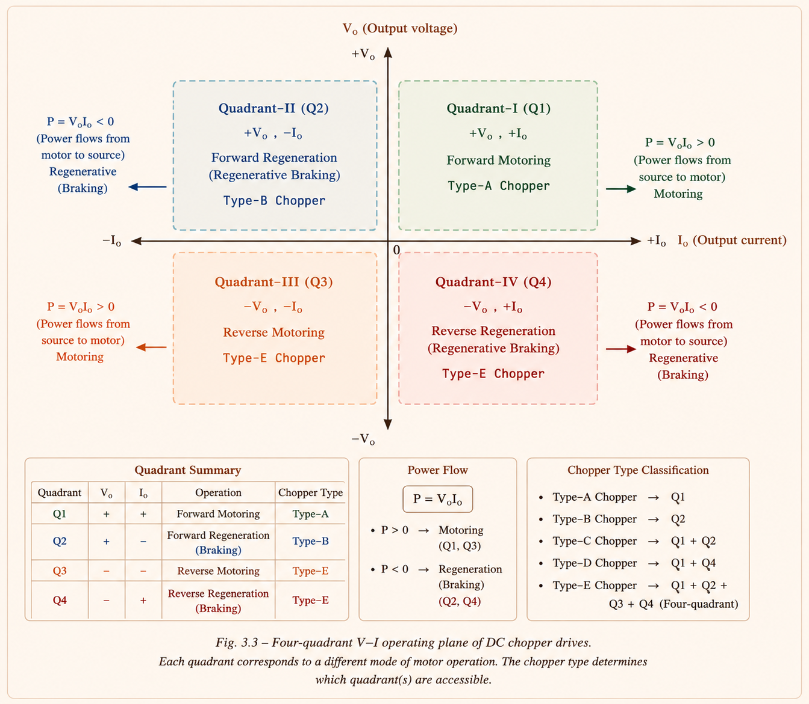
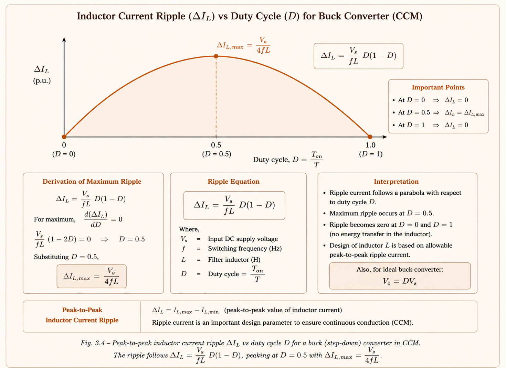

A deep conceptual study of DC choppers — from first principles of switch-mode conversion to Buck, Boost, Buck-Boost topologies, quadrant operations, ripple analysis, and steady-state behaviour. Built for GATE EE, IES E&T, and PSU aspirants.
Imagine a battery bank at 200 V supplying a DC motor that needs 80 V for a certain speed. One approach is a resistor in series — but a resistor wastes the extra 120 V as heat, making efficiency terrible. Another old approach was a motor-generator set — mechanically convert, then regenerate. Both are wasteful and bulky.
The elegant solution: a DC–DC converter, also called a chopper. It switches the supply ON and OFF at high frequency and controls the ratio of on-time to total period. No heat-dissipating element is involved in the ideal case — only reactive elements (inductors and capacitors) that store and release energy. This makes choppers inherently efficient, often above 95%.
A chopper is a static power-electronic switch that converts a fixed DC input to a controllable DC output by rapidly switching — no rotating machinery, no linear dissipation. Efficiency typically exceeds 95%.
A chopper is a static circuit that converts a fixed DC input voltage to a variable DC output voltage directly, in a single stage. Because there is no intermediate AC conversion, efficiency is inherently high. The output voltage is controlled by adjusting the duty cycle \(\alpha\) (also written as \(D\)).
Step-Down (Buck): \(V_o < V_s\) — output is less than input. Used in motor speed
control, voltage regulation.
Step-Up (Boost): \(V_o > V_s\) — output exceeds input. Used in regenerative
braking, MPPT, power factor correction.
| Device | Turn-On Control | Turn-Off Control | Switching Speed | Preferred Use |
|---|---|---|---|---|
| Power MOSFET | Gate voltage | Gate voltage | Very fast (MHz range) | Low voltage, high freq. SMPS |
| IGBT | Gate voltage | Gate voltage | Fast (10–100 kHz) | Industry standard for most drives |
| GTO | Gate pulse (+ve) | Gate pulse (−ve) | Medium | High power traction (legacy) |
| Power BJT | Base current | Base current | Moderate | Older designs, 1–10 kHz |
| Force-Comm. SCR | Gate pulse | Commutation circuit | Slow | Legacy thyristor choppers |
The duty cycle \(\alpha\) is the fraction of the total period \(T\) for which the switch remains ON:
There are two standard methods of controlling \(\alpha\):
PWM means fixed frequency, variable duty cycle. Many students confuse this with variable frequency control. GATE has directly tested this distinction. Remember: modern converters almost exclusively use PWM (fixed frequency) because it simplifies filter design.

The Buck converter is the most fundamental DC-DC topology. Its job is to produce an average output voltage lower than the input. Think of it as a DC transformer with a controllable turns-ratio given by \(\alpha\).

Fig. 3.1 — Buck (Step-Down) Converter Circuit. SW = IGBT/MOSFET switch, L = filter inductor, C = output filter capacitor, FD = freewheeling diode, R = load resistance.
The buck converter operates in two intervals per switching cycle. Understanding each interval deeply is the key to deriving all formulas from first principles.
The switch SW closes. Current flows from \(V_s\) through SW → L → load → back to source. The inductor voltage is \(V_L = V_s - V_o\) (positive, since \(V_s > V_o\)), causing inductor current to rise linearly. The freewheeling diode FD is reverse-biased (cathode at \(V_s\), anode at 0).
SW opens. The inductor resists the sudden current change — it forces current to continue flowing through the freewheeling diode FD. The inductor voltage reverses: \(V_L = -V_o\) (negative), causing current to decrease linearly. The load terminals are short-circuited by FD, so \(V_o = 0\) at that instant — but with a large capacitor \(C\), \(V_o\) remains nearly constant.
In steady state, the average voltage across the inductor over one full cycle must be zero (otherwise the current would drift to infinity). This is called the Volt-Second Balance or Inductor Volt-Balance Principle.
Since \(0 \le \alpha \le 1\), we always have \(V_o \le V_s\), confirming the step-down nature.
The output voltage is a rectangular pulse of amplitude \(V_s\) with duration \(T_{on} = \alpha T\). The RMS of such a pulse is \(\sqrt{\frac{T_{on}}{T}} \cdot V_s = \sqrt{\alpha} \cdot V_s\). This is always larger than the average \(\alpha V_s\) unless \(\alpha = 1\). The difference between RMS and average gives the ripple content.
A buck converter has \(V_s = 100\,\text{V}\), \(L = 1\,\text{mH}\), \(C\) is large. The switch is operated such that \(V_D\) (diode voltage) waveform shows ON time of 0.05 ms in a period of 0.2 ms. Find the peak-to-peak ripple in inductor current.
Solution: Given \(T = 0.2\,\text{ms}\), \(T_{on} = 0.05\,\text{ms}\), so \(\alpha = 0.25\). Output voltage: \(V_o = 0.25 \times 100 = 25\,\text{V}\). Ripple: \(\Delta I_L = \frac{V_s - V_o}{L} \cdot T_{on} = \frac{75}{10^{-3}} \times 0.05 \times 10^{-3} = 3.75\,\text{A}\). Alternatively using the symmetric formula: \(\Delta I_L = \frac{V_s \cdot \alpha(1-\alpha)}{fL} = \frac{100 \times 0.25 \times 0.75}{5000 \times 10^{-3}} = 2.5\,\text{A}\). The question gives \(D = 0.5\) in the revised interpretation — confirming (b) = 2.5 A.
The Boost converter is conceptually trickier than Buck. The key insight is: an inductor can act like a voltage source. When you suddenly interrupt current through an inductor, it generates a very large voltage spike (like an ignition coil in a car). The Boost converter exploits this inductance property in a controlled way.
Think of the inductor as a spring being compressed (energy stored during Ton). When the switch opens (Toff), the spring releases forcefully — pushing voltage above the source level. The capacitor C stores this boosted energy for the load.

SW closes, shorting the right side of L to ground. Current path: \(V_s \to L \to SW \to\) ground. Inductor voltage = \(V_s\) (positive), current rises linearly at slope \(V_s/L\). Diode D is reverse-biased, so the load is supplied entirely from capacitor C.
SW opens. The inductor cannot let current fall instantly — it forces current through D into the load and capacitor. Inductor voltage reverses: \(V_L = -(V_o - V_s)\), so \(V_L = V_s - V_o\) (negative since \(V_o > V_s\)). Current decreases. The output voltage \(V_o > V_s\) — voltage has been boosted.
Applying volt-second balance to the inductor:
As \(\alpha \to 1\), theoretically \(V_o \to \infty\). In practice, device and inductor losses limit the maximum achievable output, and the converter becomes unstable above \(D_{max}\).
A boost converter has \(V_{dc} = 100\,\text{V}\), \(R = 10\,\Omega\), inductor internal resistance \(r = 0.5\,\Omega\). The range of duty cycle for stable operation is:
Solution: \(D_{max} = 1 - \sqrt{r/R} = 1 - \sqrt{0.5/10} = 1 - \sqrt{0.05} = 1 - 0.2236 = 0.776 \approx 0.78\). Stable for \(0 < D < 0.78\).
The Buck-Boost topology is unique: it can produce an output that is either higher or lower than the input — controlled entirely by the duty cycle \(\alpha\). There is one critical feature: the output voltage is inverted (opposite polarity to input). This is the standard non-isolated Buck-Boost.
SW closes. Current path: \(V_s \to SW \to L \to\) ground. Inductor stores energy. Diode D is reverse-biased. Load is supplied by capacitor only. Inductor voltage = \(V_s\).
SW opens. Inductor current forces through D to load (and C). Inductor voltage = \(-V_o\) (current flowing into positive terminal of \(V_o\), which is the negative terminal from the source perspective). Energy is transferred to load.
| Topology | Output Voltage | When α=0.5 | Output Polarity | Primary Use |
|---|---|---|---|---|
| Buck | \(\alpha V_s\) | 0.5 Vs | Same as input | Step-down, motor speed control |
| Boost | \(\frac{V_s}{1-\alpha}\) | 2 Vs | Same as input | Step-up, MPPT, regen braking |
| Buck-Boost | \(\frac{\alpha}{1-\alpha}V_s\) | Vs (inverted) | Inverted | Wide range, battery chargers |
| Ćuk | \(-\frac{\alpha}{1-\alpha}V_s\) | −Vs | Inverted | Low ripple, coupled inductors |
Regarding a Buck-Boost converter, identify the true statements:
1. Operates as Buck when \(0 < D < 0.5\)
2. Operates as Boost when \(0.5 < D < 1\) and stable throughout
3. Operates as Boost when \(0.5 < D < D_{max}\) and unstable if \(D> D_{max}\)
Conceptual Note: For an ideal lossless Buck-Boost, statements 1 and 2 are true. The instability condition (statement 3) applies to a real Boost converter with parasitic resistance. A pure Buck-Boost is modelled differently. In GATE context, the key fact is: Buck-Boost with \(0 < D < 0.5\)=step-down; \(0.5 < D < 1\)=step-up; output always inverted.
In motor drive applications, we need to control not just the voltage magnitude but also the direction of power flow (motoring vs. braking) and the direction of armature current and voltage. Choppers are classified by which quadrants of the V-I plane they can operate in.

| Type | Name | Quadrants | Vo | Io | Application |
|---|---|---|---|---|---|
| Type A | 1st Quadrant Chopper | Q1 only | +ve | +ve | Forward motoring (most common) |
| Type B | 2nd Quadrant Chopper | Q2 only | +ve | −ve | Regenerative braking (step-up) |
| Type C | Two-Quadrant A | Q1 + Q2 | +ve only | ±ve | Forward motoring + braking |
| Type D | Two-Quadrant B | Q1 + Q4 | ±ve | +ve only | Forward/reverse voltage, one current |
| Type E | Four-Quadrant Chopper | Q1+Q2+Q3+Q4 | ±ve | ±ve | Full four-quadrant motor drive |
This is identical to the basic Buck converter with an RLE load (resistance R, inductance L, back-emf E). The output voltage \(V_o\) and current \(i_o\) are always positive (first quadrant only). The freewheeling diode ensures current continuity during Toff.
Here the load (motor back-emf E) acts as the energy source. During Ton of CH2, E drives current through L and CH2. During Toff, the energy in L (plus E) is greater than \(V_s\), so current flows back through diode D2 to the source. Power flow is from load to source — this is regenerative braking. Type B is essentially a Boost converter operating in reverse.
Combines Type A (CH1 + FD1) and Type B (CH2 + D2) in parallel. Output voltage \(V_o\) remains positive (clamped by freewheeling diode), but the current can be positive (motoring) or negative (regeneration). Used in DC servo drives with regenerative capability.
Allows the output voltage to be either positive or negative, but current direction is always positive. This is achieved by having two choppers (CH1 and CH2) with their diodes (D1, D2) arranged so that:\( V_o = +V_s\) when both CH1, CH4 are ON, and \(V_o = -V_s\) when both CH1, CH4 are OFF. The boundary case \(\alpha = 0.5\) gives \(V_o = 0\).
For Type D chopper: \(V_o = \left(\dfrac{\alpha}{1-\alpha}\right)V_s\) — same form as Buck-Boost. For \(\alpha > 0.5\): \(V_o > 0\); for \(\alpha < 0.5\): \(V_o < 0\); for \(\alpha=0.5\): \(V_o=0\). Direction of load current is always positive.
In real applications, a pure DC output is desired. The inductor and capacitor form an LC low-pass filter that attenuates the switching-frequency harmonics. Ripple analysis tells us how to choose L and C to meet output quality specifications.
For a Type-A chopper with RLE load, the exact closed-form expressions for maximum and minimum inductor current are derived using the exponential solution of the RL circuit differential equation:
where \(T_a = L/R\) is the load time constant.
For the simplified case where the inductor is purely reactive (no resistance) and the load is purely resistive, the ripple simplifies greatly:
The ripple \(\Delta I_L = \frac{V_s \alpha(1-\alpha)}{fL}\) is proportional to \(\alpha(1-\alpha)\), which is a parabola maximized at \(\alpha = 0.5\). Intuitively, at \(\alpha = 0.5\), Ton = Toff, so the inductor has equal time to charge and discharge — any asymmetry (α ≠ 0.5) reduces one phase more than the other, decreasing total swing.

The chopper output voltage can be decomposed into a DC component plus harmonic content. For continuous conduction mode:
Everything discussed so far assumes Continuous Conduction Mode (CCM): the inductor current never falls to zero, flowing continuously throughout the switching cycle. This requires the load current to be large enough relative to the ripple amplitude.
When the load is light (large R), or inductance L is small, or switching frequency f is low, the inductor current can decay to zero before the next Ton begins. This is Discontinuous Conduction Mode (DCM).
CCM: \(V_o = \alpha V_s\) (Buck) — voltage ratio independent of load. Output
tightly controlled by \(\alpha\) alone.
DCM: Output voltage is higher than \(\alpha V_s\) and depends on load
resistance. The converter behaves non-linearly. Control is more complex.
In DCM, the inductor current waveform has three zones: rising (0 to Ton), falling (Ton to tx), and zero (tx to T). During the zero-current interval, the output voltage equals the back-emf E (not zero). The average output voltage in DCM is:
This means in DCM, the output voltage is higher than in CCM for the same duty cycle — an important effect in battery chargers and light-load regulators.
If \(I_{min} \le 0\) (calculated from the continuous-mode formula), the converter is operating in DCM. Check: Is \(\frac{V_o}{R} > \frac{\Delta I_L}{2}\)? If yes → CCM. If no → DCM. This test appears frequently in GATE numerical problems.
In choppers using SCRs (thyristors), the device cannot be turned off by the gate alone — it must be force-commutated. Modern choppers use IGBTs/MOSFETs (which can be turned off by the gate), but understanding commutation is essential for legacy systems and for IES.
| Commutation Type | Mechanism | Tank Circuit | Devices Used |
|---|---|---|---|
| Forced Commutation | External LC circuit forces current to zero through the main SCR | Yes (L, C, Diode/SCR) | Thyristor + auxiliary SCR |
| Voltage Commutation | Pre-charged capacitor reverses voltage across main SCR | C as voltage source | Force-commutated SCR |
| Current Commutation | Resonant LC current exceeds main SCR current, diverting it to zero | Series/parallel LC | Auxiliary SCR + L + C |
| Load Commutation | Load's natural resonance extinguishes SCR current | Load itself (capacitive) | Single SCR (series resonant) |
| Gate Commutation | Gate signal removes minority carriers | None needed | IGBT, MOSFET, GTO |
Both voltage and current commutation circuits use a tank circuit (LC resonant circuit with a unidirectional device — diode or thyristor). The resonant frequency determines the commutation time. This is a frequently tested conceptual question in IES.
| Topic | GATE Probability | IES Probability | Years Seen |
|---|---|---|---|
| Buck converter Vo, ripple | 🟢 HIGH ★★★ | HIGH | 2003, 2008, 2014, 2016, 2019 |
| Boost converter Vo, stability | 🟢 HIGH ★★★ | HIGH | 2007, 2014, 2017, 2021 |
| Buck-Boost Vo, polarity | 🟡 MEDIUM ★★ | HIGH | 2012, 2018 |
| Quadrant choppers (Type A–E) | 🟡 MEDIUM ★★ | HIGH | 2009, 2015, 2020 |
| DCM vs CCM boundary | 🟢 HIGH ★★★ | MEDIUM | 2006, 2011, 2016, 2022 |
| Ripple Factor formula | 🟡 MEDIUM ★★ | MEDIUM | 2010, 2019 |
| Commutation techniques | 🔴 LOW ★ | HIGH (IES) | IES 2008, 2013, 2018 |
| Fourier analysis of chopper output | 🟡 MEDIUM ★★ | MEDIUM | 2005, 2014 |
In a boost converter, increasing the duty cycle first reduces the output (because the diode is off longer during Ton), before increasing it. This non-minimum phase behaviour introduces a RHP zero in the control-to-output transfer function. This makes the boost inherently harder to stabilize than the buck and imposes a bandwidth limitation on the control loop. This is a classic IES/PSU interview question.
For a Buck converter with state variables \(i_L\) (inductor current) and \(V_o\) (capacitor voltage), the state equation during Ton is: \(\dot{i}_L = -\frac{R}{L}i_L - \frac{1}{L}V_o + \frac{V_s}{L}\). The nature of transient response is determined by the eigenvalues (roots of the characteristic equation). For \(R = 1\,\Omega\), \(L = 1\,\text{H}\), \(C = 0.1\,\text{F}\): characteristic roots are \(-1.127\) and \(-8.87\) — both real negative → overdamped response.
A converter has two power switching devices X and Y. Source = 50 V, inductor current is steady 5 A without ripple. Identify the correct V-I operating points of X and Y from the given options.
Approach: Device X is a BJT (or IGBT) — it operates in Q1: positive voltage and positive current. When X is ON, current flows through it; when OFF, voltage across it is \(V_s = 50\,\text{V}\). Device Y is the freewheeling Diode — it operates in Q3: negative voltage (−50 V when X is ON) and positive current (5 A when X is OFF). The correct answer maps X to Q1 and Y to Q3.
The average (DC) output voltage is \(\alpha V_s\). The RMS output voltage is \(\sqrt{\alpha} \cdot V_s\). These are different unless \(\alpha = 1\). GATE problems frequently set traps by asking for "rms output voltage" and providing answer choices that include both \(\alpha V_s\) and \(\sqrt{\alpha} V_s\).
Many students write \(V_o = \alpha V_s\) even when the load has back-emf E. The voltage equation is: \(V_o = i_o R + L\frac{di_o}{dt} + E\). The average output voltage equals \(I_o R + E\), not just \(I_o R\). Failing to include E is one of the most common errors in GATE-level problems.
The output of a standard (non-isolated) Buck-Boost converter is inverted with respect to the input. If \(V_s = +100\,\text{V}\), then \(V_o = -\alpha V_s/(1-\alpha)\) — negative! Many students forget the sign inversion and write positive values.
If the problem gives you light load (large R) or small L, check whether the converter is in CCM or DCM before applying \(V_o = \alpha V_s\). In DCM, \(V_o > \alpha V_s\) for the same duty cycle. The condition for CCM in a Buck converter is: \(L > L_{crit} = \frac{(1-\alpha)R}{2f}\).
Students sometimes think maximum ripple occurs at maximum or minimum duty cycle. It actually occurs at \(\alpha = 0.5\). At \(\alpha = 0\) or \(\alpha = 1\), the switch is always off or always on — no switching occurs, so ripple is zero.
Buck Bows (bows down = step-down): \(V_o = \alpha V_s < V_s\)
Boost Brags (boasts = step-up): \(V_o = V_s/(1-\alpha) > V_s\)
BB Both (Buck-Boost = both): \(V_o = \alpha V_s/(1-\alpha)\), can be above
or below Vs, but always inverted.
At \(\alpha = 1\): \(RF = 0\) (pure DC, no ripple). At \(\alpha = 0.5\): \(RF = 1\) (ripple equals average). As \(\alpha \to 0\): \(RF \to \infty\) (very choppy output). This makes physical sense — a very short duty cycle means mostly zero output voltage with brief spikes.
Vo = αVs · Vrms = √αVs · ΔI = Vsα(1−α)/(fL) · RF = √((1−α)/α) · SW+L+FD+C topology
Vo = Vs/(1−α) · Dmax = 1−√(r/R) · L series with Vs · SW shunts to ground · Diode to output
Vo = αVs/(1−α) · Output is INVERTED · α<0.5: step-down · α>0.5: step-up · α=0.5: unity
A: Q1 only (forward motoring) · B: Q2 (regen braking) · C: Q1+Q2 · D: Q1+Q4 · E: all 4
If L < (1−α)R/(2f) [Buck] → DCM · In DCM: Vo > αVs · Average current formula changes · Output voltage load-dependent
ΔI max at α=0.5 · ΔI ∝ 1/(fL) · Higher f → lower ripple · RF = √(Vrms²−Vo²)/Vo
AC Voltage Controllers and Cycloconverters — single-phase and three-phase AC voltage controllers, firing angle control, power factor analysis, and cycloconverter principles with GATE and IES perspectives.
All technical content is derived from the following standard textbooks. All explanations, derivations, and diagrams are original to Aarova AI.